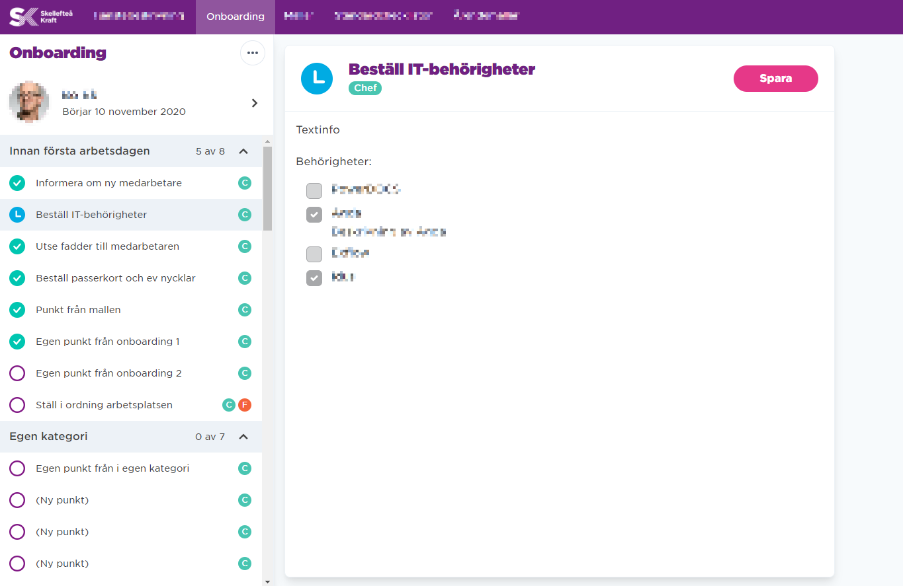

Skellefteå Kraft is a big energy company located in the north of Sweden.
With over 750 employees in various sectors they have many people starting, changing position and sometimes exiting the company. They identified a bottleneck in their onboarding/changes/exit processes for employees and wanted to streamline this for everyone involved. That’s where “Slussen” comes in.
My role in this project was to design the User Experience, User Interface and the components used to build it. The system was branded according to Skellefteå Krafts styling guide.
Skellefteå Kraft required a customised onboarding system, Nethouse provided me as a UX/UI designer and another developer to accompany and work closely with their software-department and super users for the development of the system.
The design process began with analysing business needs, daily problems and challenges that the HR users experienced and trying to understand the point of view of the employee.
I developed prototypes for each flow which was presented to the customer, this was iterated on until we had ironed out all identified pain points.
The result was SLUSSEN, a user-friendly system that simplified onboarding and internal transitions.

Quote from Anna-Maria is borrowed from my earlier employer Nethouse/Aspire/Ninetech.